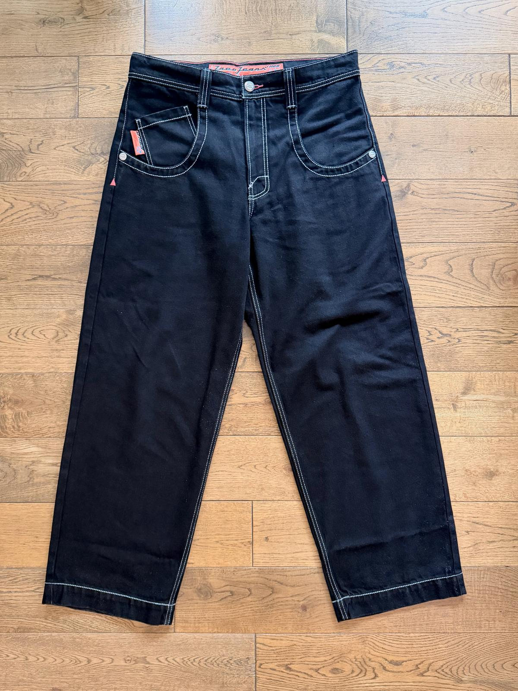
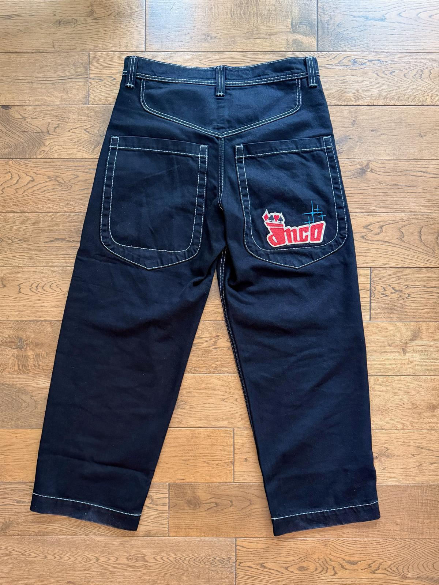
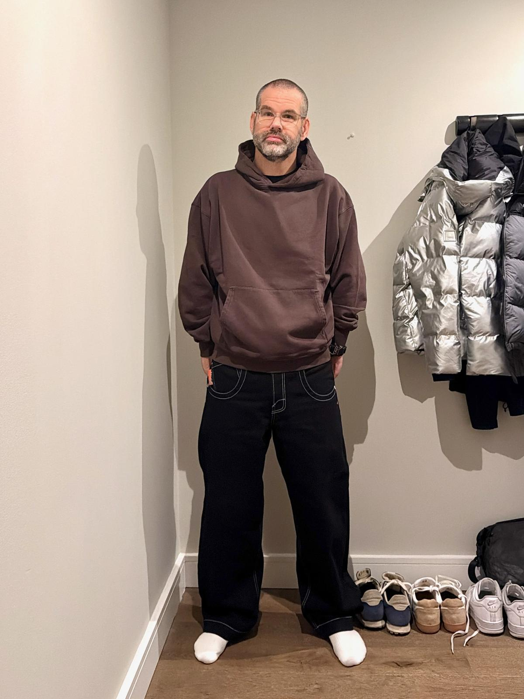
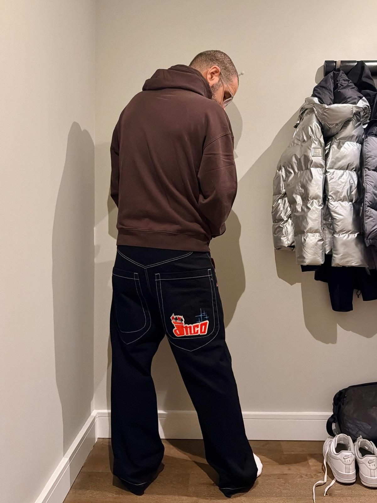
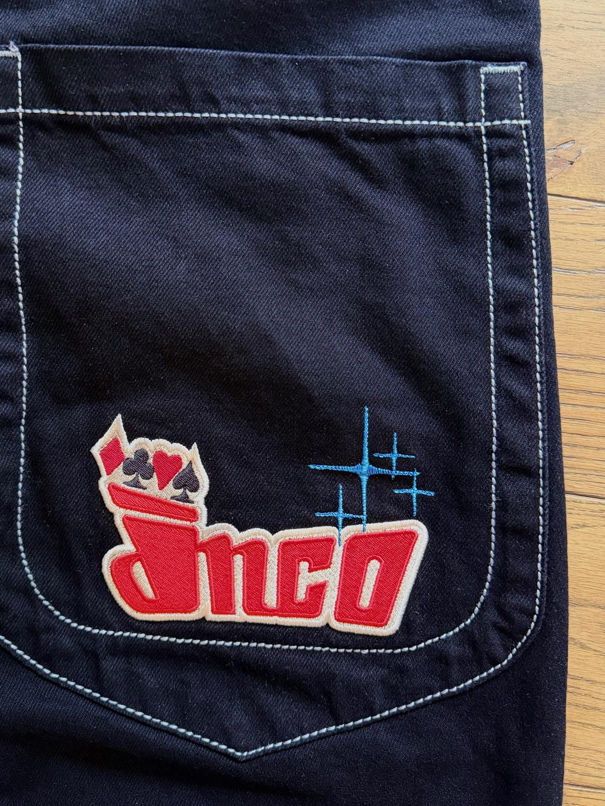
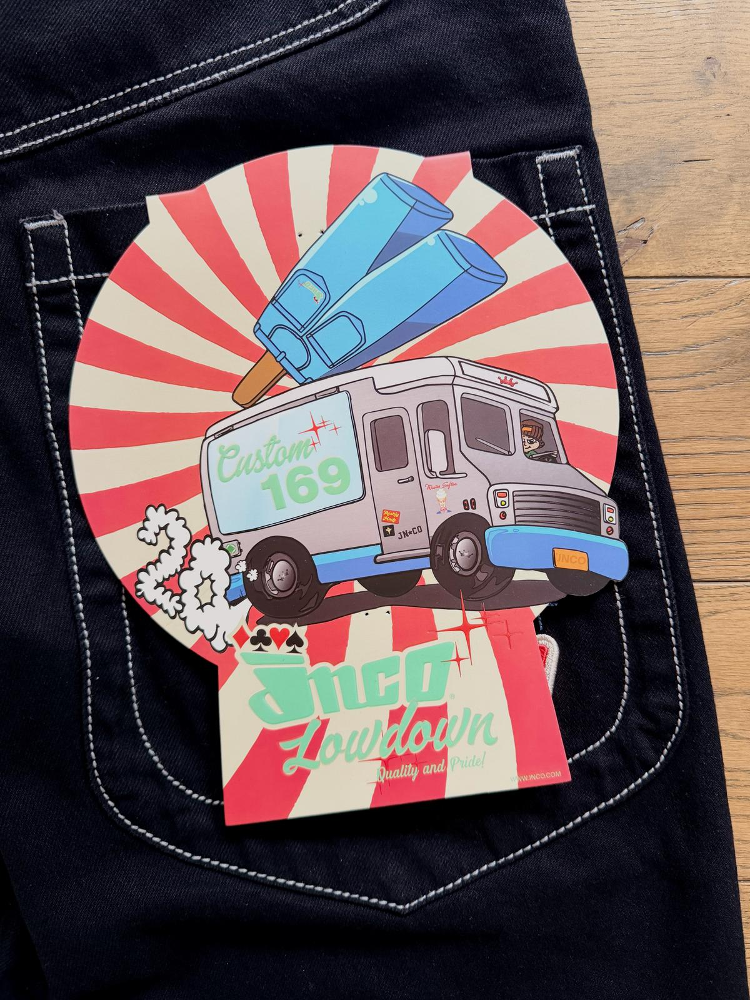

The JNCO 1169 Low Down Deck in Jet Black is my fifth pair of JNCOs. Given that my most recent pair before them was the widest model available, it almost feels a bit refreshing to also get the all-but-slimmest ones.
These were a bit of an impulsive purchase, triggered by seeing them on a guy in Tate Britain and the Black Friday sale coinciding.


With 20” leg openings, these are definitely slim for being JNCOs. To be honest, I was rather sceptical before I saw them IRL. Like, why would you wear JNCO jeans if they are not baggy? 🤨
Then, after seeing them IRL, I realised they’re actually quite nice and fill a unique role in my collection. They are the JNCOs for when JNCOs aren’t appropriate.
Also, I love the jet-black denim - something that’s been missing so far in my collection.
Expect me to wear these in the office soon!


I quite like the embroidery typeface and how the red looks against the black fabric. The ♦️♣️♥️♠️ symbols also look quite nice. A label inside the jeans calls them “Las Vegas”, so perhaps that’s what they were supposed to be called before they went for Deck.

The back-pocket flasher is cute, for sure, but I’m not sure what an ice cream van has got to do with the card deck theme of the Jeans 🤔
